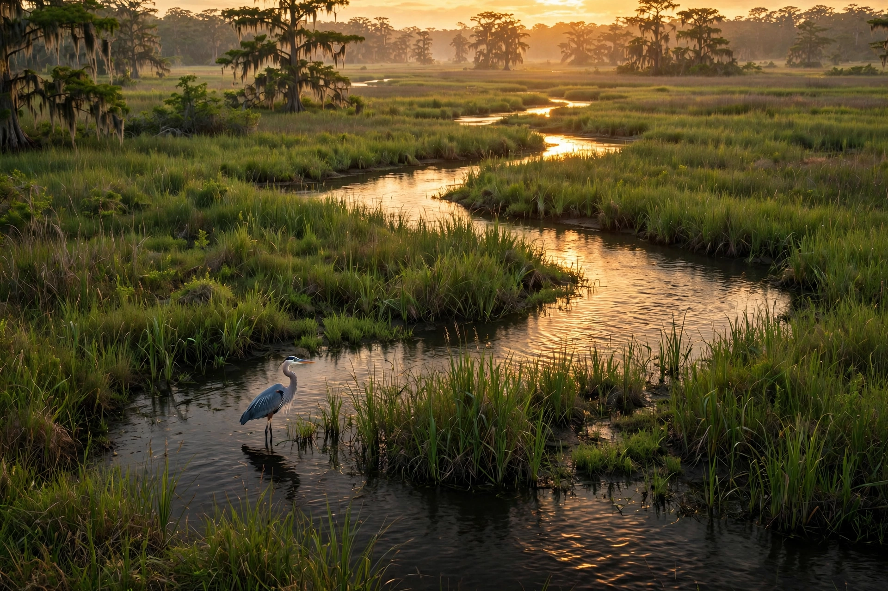
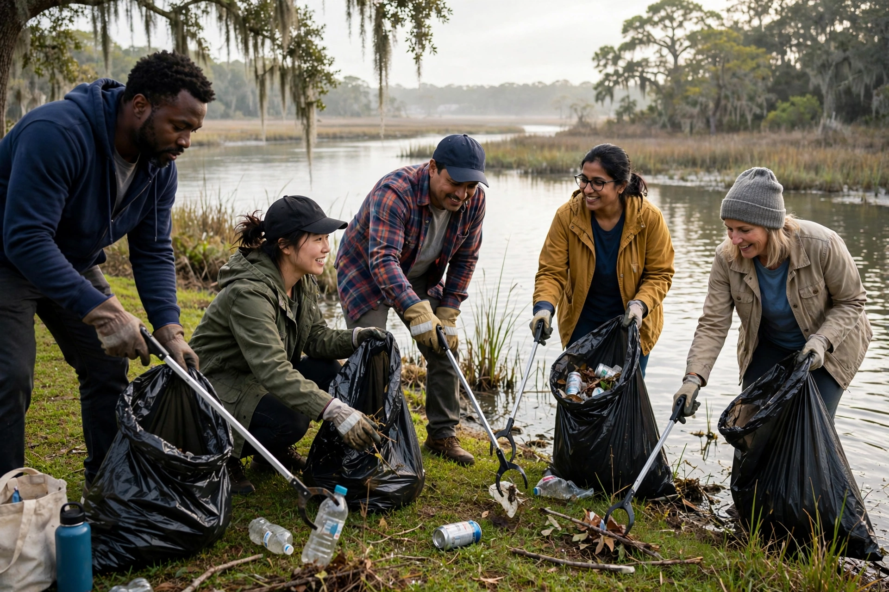

Twój pierwszy krok dla wybrzeża
Znajdź punkt wyjścia do wolontariatu, pomysłów dla klasy, przekazania potrzebnych materiałów lub dzielenia się umiejętnościami.
Przeczytaj poradnik →
Silne Wybrzeże
To nasza społeczność. To nasza duma. To nasze wybrzeże.
Sąsiedzi chronią naszą wodę, owoce morza i wybrzeże, które odziedziczą nasze dzieci. Cała chwała Bogu, a całe uznanie społeczności.
Silne Wybrzeże na żywo
Każda wizyta to kolejna okazja, by zadbać o Matkę Ziemię.
Łączenie z danymi aktywności na żywo…
Zliczanie zaczyna się od pierwszej zarejestrowanej odsłony.
Liczby oznaczają zarejestrowane wczytania stron, a nie poszczególne osoby. Odświeżenie strony lub zmiana języka dodaje odsłonę; osobne karty mogą być liczone jako osobne sesje. Ruch automatyczny i blokowanie zliczania mogą wpływać na wyniki. Dane odświeżają się co 30 sekund, gdy ta strona jest widoczna.
Zacznij tutaj
Wiele rąk. Jedno wybrzeże. Razem silniejsi.
Silne Wybrzeże


Jak to się zaczęło · 15 października 2026 r.
15 października 2026 r. na mokradłach w Bayou Bernard Park (James Hill Park), 1890 Switzer Rd, Gulfport znaleziono porzucony telewizor i ciężkie odpady plastikowe — w wodzie, która płynie do Mississippi Sound i nad którą będą dorastać nasze dzieci.
Nikt nie odwrócił wzroku. Zrobiono zdjęcia, zgłoszono znalezisko, usunięto odpady i zapisano: co, gdzie i kiedy. Tak powstał Wpis #001, a wraz z nim Silne Wybrzeże: sąsiedzka straż nad bayou, dzięki której wyrzucane odpady są zauważane, dokumentowane i usuwane, zamiast miesiącami zalegać na mokradłach.
„To nasz dom. Planeta nie niszczeje przez przypadek — niszczeje przez zaniedbanie, a zaniedbanie jest wyborem. My wybieramy inaczej. Matka Ziemia nie ma lobbysty. Ma nas.”


Straż nad Zatoką · Zgłoś dzikie wysypisko
Najpierw zdjęcie z bezpiecznej odległości. Potem powiadomienie, żeby sąsiedzi od razu się dowiedzieli. Następnie oficjalny telefon. Jedna obserwacja, dwóch odbiorców: sąsiedzi i właściwe służby.
🚨 ALARM: WYRZUCANIE ODPADÓW / ŚMIECI — SILNE WYBRZEŻE CO: [co zauważono — trwające wyrzucanie / świeże odpady, jakiego rodzaju] GDZIE: [pinezka lokalizacji lub najbliższa ulica / charakterystyczny punkt] KIEDY: [data i godzina obserwacji] ZDJĘCIE: [w załączeniu] STATUS: [zgłoszono do INSTYTUCJI przez KANAŁ o GODZINIE — uzupełnij po zgłoszeniu]
Opublikuj wypełnione powiadomienie tam, gdzie zaglądają sąsiedzi — na czacie grupowym, w grupie na Facebooku lub w Nextdoor — i zachowaj kopię, korzystając z poniższego wzoru dziennika. Ta strona nie przyjmuje ani nie publikuje zgłoszeń zdarzeń. Dane pozwalające ustalić tożsamość przesyłaj oficjalnymi kanałami zgłoszeń.
Bezpieczeństwo — bez wyjątków: Tylko obserwuj i zgłaszaj. Nigdy nie konfrontuj się z osobą wyrzucającą odpady. Nie blokuj pojazdów, nie wdawaj się w spory i nikogo nie śledź. Zrób zdjęcie z bezpiecznej odległości, a dalsze działania pozostaw służbom. Jeśli komuś grozi niebezpieczeństwo, dzwoń pod 911 — nie korzystaj wtedy z sąsiedzkiego łańcucha powiadomień.
Wszelkie miejskie zgłoszenia niewymagające pilnej interwencji, w tym dotyczące odpadów. Inny kontakt: 228-868-5700 · [email protected]. Obserwuj z bezpiecznego miejsca i przekazuj istotne szczegóły bezpośrednio właściwej instytucji.
Za sprzątanie dzikich wysypisk w granicach miasta odpowiadają Code Enforcement i Public Works.
Nielegalne zrzuty do kanalizacji deszczowej i cieków wodnych. [email protected]
Federalny punkt zgłaszania wycieków i nagłych zagrożeń — obsługiwany przez U.S. Coast Guard, przekazujący zgłoszenia do koordynatora terenowego EPA / Coast Guard.
Główna instytucja stanowa do spraw jakości wody i nielegalnego wyrzucania odpadów. W nagłych przypadkach: całodobowa linia MEMA pod numerem 1-800-222-6362 powiadamia zespół interwencyjny MDEQ.
Zasoby przybrzeżne i morskie, Biloxi. [email protected] · Współorganizator Mississippi Coastal Cleanup.
Federalny formularz zgłaszania naruszeń. Obsługa zgłoszeń EPA Region 4: 800-241-1754.
Odpady na wodach żeglownych i nieuprawnione zasypywanie mokradeł — obszar objęty §404 ustawy Clean Water Act.
Źródło: wskazówki MDEQ dotyczące nielegalnego wyrzucania odpadów, sprawdzono 25 października 2026 r. Nie konfrontuj się z nikim, nie śledź nikogo i nie ujawniaj publicznie tożsamości osób.
Dziennik społeczności · Wspólnie dbamy o dokumentację
Zapisane zgłoszenie ułatwia śledzenie postępów i pomaga kolejnym sąsiadom kontynuować działania. Skopiuj wzór, rozpocznij wpis w dniu zgłoszenia i przechowuj go w miejscu dostępnym dla ekipy. Ta strona nie wysyła ani nie przechowuje Twojego zgłoszenia — dziennik zachowujesz i udostępniasz samodzielnie.
SILNE WYBRZEŻE — WPIS DO DZIENNIKA SPOŁECZNOŚCI DATA/GODZINA: [kiedy dokonano zgłoszenia] INSTYTUCJA: [do kogo trafiło] KANAŁ: [telefon / e-mail / formularz internetowy] ZGŁOSZONO: [co zgłoszono — wyrzucanie odpadów, śmieci, miejsce pochodzenia] PRZYJĄŁ/PRZYJĘŁA: [nazwisko, numer zgłoszenia/sprawy lub „oczekuje na potwierdzenie”] ODPOWIEDŹ: [co instytucja przekazała lub zrobiła — aktualizuj po otrzymaniu odpowiedzi] PONOWNY KONTAKT: [data i kanał lub „jeszcze nie”]
Pierwszy wpis już powstał: znalezisko w Bayou Bernard Park, sfotografowane i zgłoszone 15 października — Wpis #001. Każdy kolejny telefon i e-mail w tej sprawie dopisujemy do tego samego wpisu.
Pracownicy tych instytucji obsługują wiele zgłoszeń. Jeśli minie tydzień bez wiadomości, zrób kolejny krok — dziękując za dotychczasową pomoc — i odnotuj go w tym samym wpisie.
Napisz do tej samej osoby w instytucji, podaj datę pierwotnego zgłoszenia i jego numer, a następnie poproś o pisemną informację o stanie sprawy.
Poproś instytucję o dokumentację dotyczącą zgłoszonego miejsca, aby ekipa wiedziała, co już zrobiono i gdzie nadal potrzebna jest pomoc.
Rada miasta, przedstawiciel hrabstwa, parlamentarzyści stanowi — udostępnij im wpisy, aby poznali potrzeby i mogli wesprzeć działania.
Dziennik, zdjęcia i wspólna praca sąsiadów — dobrze udokumentowane społeczne sprzątanie to historia, którą warto opowiedzieć.

Sieć powiązań · Katalog kontaktów
Silne Wybrzeże nie działa samotnie — łączy się z ekipami, programami i partnerami, którzy już dbają o tę wodę: od biura Gulfport 311 po światowy Ocean Trash Index. Jesteśmy wdzięczni każdemu z nich. Wybierz poziom działania, otwórz kartę i skorzystaj z sugerowanego pierwszego kroku. Jeśli jest nim list, chodzi o przygotowany szkic wiadomości — nic nie zostanie wysłane, dopóki konkretna osoba nie sprawdzi dokładnej treści.
Brak zaznaczenia = wszystkie organizacje. Wybierz poziom, aby zawęzić listę.
Stały program (MSU Extension + Mississippi Marine Debris Task Force), będący częścią International Coastal Cleanup organizacji Ocean Conservancy — każdy zapisany przedmiot staje się częścią światowych danych. Wszystkie 9 lokalizacji na 2026 r. znajduje się przy plażach lub portach. Program organizuje własne wydarzenia według własnego harmonogramu; Silne Wybrzeże nie zaprasza na jego miejsca zbiórek.
Najlepszy pierwszy krok: Jeśli uczestniczysz w oficjalnym programie, zapisz się i sprawdź szczegóły lokalizacji bezpośrednio na jego oficjalnej stronie wydarzenia. Nic na tej stronie nie zapisuje Cię do programu ani nie wzywa na jego miejsca zbiórek.
Obsługiwany całodobowo przez U.S. Coast Guard — jeden federalny punkt kontaktu w sprawie wycieków i nagłych zagrożeń dla wody. Zgłoszenie trafia do wcześniej wyznaczonego koordynatora terenowego: EPA w głębi lądu, Coast Guard w strefie przybrzeżnej. Tak poważny incydent otrzymuje szybką i skoordynowaną pomoc.
Najlepszy pierwszy krok: Korzystaj z tego kontaktu przy trwającym zrzucie, tłustej plamie, zapachu chemikaliów lub bezpośrednim zagrożeniu — i odnotuj rozmowę w Dzienniku społeczności.
Federalna agencja ochrony środowiska właściwa dla Mississippi: zanieczyszczenie wody, nielegalne wyrzucanie odpadów i ochrona mokradeł na podstawie §404 ustawy Clean Water Act.
Najlepszy pierwszy krok: Wypełnij formularz naruszenia równolegle ze zgłoszeniem miejskim i zapisz to w Dzienniku społeczności, aby ekipa mogła śledzić sprawę.
Federalny system dokumentowania odpadów morskich. Aplikacja Marine Debris Tracker zapisuje odpady wraz z GPS i zdjęciami bezpośrednio w krajowej bazie NOAA — federalnym odpowiedniku światowego Ocean Trash Index.
Najlepszy pierwszy krok: Zarejestruj znalezisko z Bayou Bernard w aplikacji Tracker ze zdjęciami i GPS, aby trafiło również do federalnej bazy danych.
Mówimy wprost, bo uczciwość jest podstawą naszej działalności: FEMA nie sprząta bayou. Środki FEMA są uruchamiane po prezydenckiej deklaracji stanu klęski na wniosek gubernatora; agencja oferuje też dotacje na ograniczanie zagrożeń, o które występują samorządy. Zwykłe dzikie wysypiska nie należą do jej zadań — zgłoszenia zanieczyszczeń przebiegają ścieżką NRC → koordynator EPA/Coast Guard → MEMA. Gdyby burza rozrzuciła odpady wzdłuż całego wybrzeża, FEMA włączy się za pośrednictwem MEMA.
Najlepszy pierwszy krok: W przypadku dzikiego wysypiska — żaden. Zgłoś sprawę do NRC/EPA/MDEQ. Zachowaj tę kartę, aby każde zgłoszenie trafiało prosto do osób, które mogą zareagować.
Główna stanowa instytucja do spraw jakości wody, kontroli zanieczyszczeń i nielegalnego wyrzucania odpadów do wód stanowych. Jej publiczny monitoring skupia się na bakteriach przy plażach — dlatego zapisywanie obserwacji przez sąsiadów mieszkających nad bayou tak bardzo pomaga.
Najlepszy pierwszy krok: Zgłoś sprawę telefonicznie, uzyskaj nazwisko lub numer zgłoszenia i zapisz je tego samego dnia.
Stanowy partner w sprawach Mississippi Sound i bayou, z siedzibą w Biloxi, współorganizujący Mississippi Coastal Cleanup z Marine Debris Task Force. Biuro Seafood Technology Bureau zajmuje się badaniami wody — to, co w niej żyje, trafia na nasze stoły jako owoce morza z Mississippi.
Najlepszy pierwszy krok: Zgłoś odpady i poproś DMR o zarejestrowanie miejsca nad bayou, aby znalazło się w dokumentacji. List kontaktowy przygotowany — niewysłany
Koordynacja stanowa: prowadzi State Emergency Operations Center i łączy powiatowe agencje EMA z pomocą stanową i federalną. MEMA koordynuje działania, ale nie egzekwuje przepisów ochrony środowiska — jej całodobowa linia jest jednak najszybszą drogą do zespołu interwencyjnego MDEQ.
Najlepszy pierwszy krok: Tylko przy zdarzeniach związanych z niebezpiecznymi substancjami na większą skalę — w innych przypadkach zacznij od MDEQ i 311.
Najszybszy pierwszy kontakt w sprawie konkretnego dzikiego wysypiska w granicach miasta. Oficjalne wskazówki miasta: zgłaszaj osoby wyrzucające odpady przez 311 oraz fotografuj pojazd i tablicę rejestracyjną.
Najlepszy pierwszy krok: Zgłoś sprawę pod 311 w dniu obserwacji — zgłoszenia miejskie, hrabstwa, stanowe i federalne biegną równolegle, wszystkie udokumentowane. List z prośbą o wsparcie miasta przygotowany — niewysłany
Skargi dotyczące śmieci i odpadów na obszarach hrabstwa poza granicami miast — właściwa droga, gdy dzikie wysypisko leży poza miastem.
Najlepszy pierwszy krok: Na terenach hrabstwa korzystaj z jego kanału skarg; formularz dotyczący zagospodarowania terenu zawiera osobną kategorię dotyczącą śmieci i odpadów.
Mississippi Coastal Cleanup jest częścią International Coastal Cleanup, działającego od 1986 r. Dane zapisane w aplikacji Clean Swell trafiają natychmiast do Ocean Trash Index, największej na świecie bazy danych o odpadach morskich.
Najlepszy pierwszy krok: Przekaż zespołowi sprzątania dokumentację znaleziska w Bayou Bernard, aby odpady z bayou liczyły się w tych samych danych co odpady z plaż. Szkic przygotowany — niewysłany
Organizacja znana z zatrzymywania plastiku w rzekach, zanim dotrze do oceanu. Bayou Bernard uchodzi do Mississippi Sound — strumień śmieci w amerykańskich bayou wciąż płynie, a tutaj społeczność zatrzymuje go własnymi rękami.
Najlepszy pierwszy krok: Główny list kontaktowy w wersji międzynarodowej, z dołączoną dokumentacją znaleziska w Bayou Bernard. Szkic przygotowany — niewysłany
Oddolna sieć oddziałów stworzona właśnie do takich działań: miejscowe wody, lokalni mieszkańcy, badanie czystości wody i rzecznictwo.
Najlepszy pierwszy krok: Zapytaj, czy istnieje oddział na wybrzeżu Mississippi lub kontakt regionalny i jak ekipa z Gulfport może dołączyć do ich sieci. Szkic przygotowany — niewysłany
Prowadzi Great Global Cleanup. Udokumentowana lokalna akcja sprzątania ze zdjęciami i wagą zebranych odpadów to dla nich konkretne świadectwo działania.
Najlepszy pierwszy krok: Przedstaw stały patrol Bayou Bernard sieci Great Global Cleanup, dołączając dokumentację znaleziska i kolejne zgłoszenia. Szkic przygotowany — niewysłany
Firma zajmująca się sprzątaniem, z ogromną publicznością; pierwszy kontakt prowadzi przez dział współpracy. Prosimy o nagłośnienie działań, nie o pieniądze.
Najlepszy pierwszy krok: E-mail do działu współpracy — działająca ekipa z Gulfport z konkretnymi wynikami prosi o nagłośnienie swojej pracy. Szkic przygotowany — niewysłany
Światowy sojusz ponad 1300 organizacji. Grupy mogą zgłaszać chęć dołączenia — dzięki temu Gulfport może znaleźć się na światowej liście.
Najlepszy pierwszy krok: Zgłoszenie do koalicji oraz krótka wiadomość do biura prasowego z dołączonym oświadczeniem publicznym. Szkic przygotowany — niewysłany
Światowa kampania ONZ przeciw zanieczyszczeniu plastikiem — do Clean Seas dołączyło również dorzecze Mississippi, więc wybrzeże Zatoki jest już częścią tych działań. Uczciwie zaznaczamy: Clean Seas przyjmuje zobowiązania rządów, firm i organizacji — nie prowadzi skrzynki na indywidualne zgłoszenia mieszkańców.
Najlepszy pierwszy krok: Publiczne poparcie — publikuj fakty z Gulfport pod hasztagiem #CleanSeas i pozwól wymienionym wyżej organizacjom przekazać je dalej.
Koalicja na rzecz czystej wody w Zatoce, z siedzibą w Nowym Orleanie i wieloletnią historią działań w Mississippi. Czysta woda i zdrowe mokradła to ich dziedzina — cieszymy się, że działają nad tymi wodami.
Najlepszy pierwszy krok: Zadzwoń. Opowiedz o Bayou Bernard, zapytaj, kto obecnie odpowiada za Mississippi, zaproponuj udostępnianie rozwijającego się dziennika społeczności i zapytaj, jak Silne Wybrzeże może wesprzeć ich pracę. Szkic przygotowany — niewysłany
Prowadzi publiczny kanał „Zgłoś zdarzenie” z możliwością dodania zdjęć, przeznaczony dla mieszkańców, którzy zauważą zanieczyszczenie. Patroluje dolny bieg Mississippi w Luizjanie — Bayou Bernard leży poza tym obszarem, ale to najbliższa organizacja Waterkeeper, a prośba o wskazanie właściwego kontaktu nic nie kosztuje.
Najlepszy pierwszy krok: Zgłoś znalezisko w Bayou Bernard przez formularz zdarzeń, dołącz zdjęcia i zapytaj wprost, która organizacja Waterkeeper obejmuje Mississippi Sound. Szkic przygotowany — niewysłany
Chroni przybrzeżne mokradła Mississippi, w tym system Pascagoula, i ma biuro nadmorskie w Ocean Springs — w sąsiednim hrabstwie.
Najlepszy pierwszy krok: Krótki list do oddziału Mississippi — sąsiedzi sprzątający mokradła proszą o kontakt z zespołem zajmującym się wybrzeżem. Szkic przygotowany — niewysłany
Wybrzeże Mississippi jest miejscem lęgów ptaków — odpady na mokradłach niszczą siedliska, a pracownicy Audubon Delta już działają w okolicach Gulfport.
Najlepszy pierwszy krok: Jedna strona do dyrektorki ds. polityki publicznej: znalezisko i pytanie — kto w zespole nadmorskim powinien otrzymywać wiadomości Straż nad Zatoką? Szkic przygotowany — niewysłany
Zorganizowana społeczność już działająca w naszej zlewni: mieszkańcy Turkey Creek chroniący zasoby naturalne i kulturowe swojego potoku przy wsparciu Land Trust, który opiekuje się również Turkey Creek Greenway. Bernard Bayou nie ma jeszcze własnej grupy przyjaciół. Silne Wybrzeże może z czasem wypełnić tę rolę, stojąc u boku sąsiadów z najdłuższym doświadczeniem.
Najlepszy pierwszy krok: Przedstaw Silne Wybrzeże jako sąsiadów gotowych do współpracy — zaproponuj pomoc w obserwacji wody i zapytaj doświadczonych opiekunów zlewni, co chcieliby wiedzieć, kiedy zaczynali.
Lokalna redakcja wybrzeża. Udokumentowane społeczne sprzątanie — wspólna praca sąsiadów, zdjęcia i konkretne wyniki — to historia warta opowiedzenia.
Najlepszy pierwszy krok: Zadzwoń do redakcji, mając pod ręką dokumentację znaleziska.
Relacje AP z Jackson trafiają do gazet w całym Mississippi. Informacja dla mediów jest przygotowana do wklejenia: kto, co, kiedy, dlaczego to ważne oraz wiadomość o dostępnych zdjęciach udokumentowanego znaleziska.
Najlepszy pierwszy krok: Udostępniaj dokumentację znaleziska i kolejne zgłoszenia Straż nad Zatoką. Szkic przygotowany — niewysłany
Całe wybrzeże · Trzy patrole, jedno wybrzeże
Patrolujemy trzy miejsca, od zachodu po wschód wybrzeża Mississippi. Wszędzie obowiązuje ta sama zasada: zauważ, zrób zdjęcie z bezpiecznej odległości, zgłoś i zapisz. Punkt patrolowy nie oznacza zdarzenia — oznacza, że ktoś czuwa.
Bayou Bernard · Harrison County
Tutaj zaczęło się Silne Wybrzeże. Bayou Bernard i jego dopływy — Turkey Creek i Flat Branch — obserwują mieszkający nad nimi sąsiedzi. Znalezisko z 15 października w Bayou Bernard Park to Wpis #001.
Tchoutacabouffa River · Back Bay of Biloxi
Rzeka Biloxi wijąca się przez miasto do Back Bay — wody, na których pracuje miejscowa flota rybacka. Stały punkt obserwacji: jeszcze niczego tu nie zgłoszono, i właśnie po to czuwa patrol.
Pascagoula River · Jackson County
Jedna z ostatnich wielkich swobodnie płynących rzek Ameryki, biegnąca przez Jackson County do Mississippi Sound. Ten sam patrol na wschodnim krańcu wybrzeża: najpierw zdjęcie, potem zgłoszenie i zapis.
Wiedza o lokalnych wodach
Jeden połączony system — bayou, potoki, jezioro i kanał żeglugowy uchodzące do Mississippi Sound. Jeśli mieszkasz w pobliżu Lemoyne Blvd, Dedeaux Rd, Canal Rd lub Orange Grove, to również Twoje wody.
Główny ciek — monitorowany od Highway 49 po Industrial Seaway, ze stacjami MDEQ w Orange Grove i przy Canal Rd. Telewizor i plastik z 15 października znaleziono na jego mokradłach w Bayou Bernard Park.
Płynie przez około 12,9 mili i łączy się z Bernard Bayou na północ od lotniska. W 2021 r. znalazł się wśród 10 najbardziej zagrożonych rzek Ameryki. Jego historyczna społeczność od lat broni tej zlewni.
Niewielki dopływ ze stacją monitoringu MDEQ przy skrzyżowaniu z Dedeaux Road — najbliższy nazwany, monitorowany potok w okolicy Lemoyne Blvd.
Tutaj system łączy się z Mississippi Sound. Wcześniejsze ekipy Renew Our Rivers usunęły 4,5 tony odpadów z Gulfport Lake / Industrial Seaway i 5,25 tony z Seaway i Bayou Bernard.
Kolejna zlewnia na północny wschód, w pobliżu Lyman — część tej samej równiny nadmorskiej, obserwowana przez tych samych sąsiadów.
Stanowy monitoring obejmuje ostrzeżenia o bakteriach przy plażach (wyślij SMS „MDEQbeach” pod 95577). Wyniki sprzątania poznajemy po zakończeniu akcji. Dodatkowymi oczami nad bayou są sąsiedzi mieszkający przy jego brzegach.
Rodziny na tym wybrzeżu żyją nad wodą — wychowujemy przy niej dzieci, zabieramy je nad rzeki, łowimy ryby, pływamy i dorastamy. Dlatego porzucone w tych rzekach opony tak bardzo bolą. To nasze wody.
Kraby, krewetki, ostrygi oraz kobiety i mężczyźni, którzy utrzymują się z pracy na tych wodach. To, co trafia na mokradła, trafia do tej samej wody, z której pochodzą nasze owoce morza. Ochrona bayou to ochrona naszych stołów, miejsc pracy i dobrego imienia wybrzeża.
Zdjęcia PRZED sprzątaniem z bezpiecznej odległości · zdjęcia PO sprzątaniu z tych samych ujęć · zapisz datę, miejsce, rodzaj odpadów i odbiorcę zgłoszenia · zachowaj wpis i zdjęcia tego samego dnia · udostępniaj udokumentowane wyniki — ludzie ufają temu, co mogą zobaczyć.
Twoje wybrzeże. Twój udział.
Zależy Ci na tej wodzie? Zacznij od jednej rzeczy, którą możesz zrobić. Wybierz swoją drogę i napisz do ekipy krótki e-mail o tym, jak chcesz pomóc.
Otwiera szkic w Twojej aplikacji pocztowej. Sprawdź go i wyślij do zespołu; nic nie jest wysyłane automatycznie.
Pomóż przy sprzątaniu pod nadzorem, dokumentacji, zaopatrzeniu lub informowaniu innych. Podaj swoją miejscowość i rodzaj pomocy, którą możesz zaoferować.
WolontariatUczniowie mogą pomagać zapisywać wyniki sprzątania, tworzyć zatwierdzone ulotki lub uczestniczyć w działaniach pod nadzorem. Masz mniej niż 18 lat? Poproś rodzica, opiekuna lub nauczyciela o uzgodnienie udziału z nami.
Uczniowie i studenciNauczyciele, rodziny i grupy: zapytajcie o zajęcia dostosowane do wieku, zainteresowań i dostępnej opieki dorosłych.
Nauczyciel lub grupaTe linki otwierają program pocztowy. Sprawdź i wyślij wiadomość w nim; ta strona nie wysyła ani nie przechowuje Twoich danych. Możesz też napisać bezpośrednio na [email protected]. Nie przesyłaj prywatnych danych dzieci ani informacji medycznych.
Przedstaw jeden pomysł rodzicowi, nauczycielowi lub znajomemu: poznaj bayou, zaprojektuj ulotkę i uzyskaj zgodę przed jej rozwieszeniem albo poproś dorosłego o zorganizowanie sprzątania. Dorośli mogą skorzystać z wniosku o zestaw sprzętu Mississippi Coastal Cleanup; o dostępności i przyznaniu wyposażenia decydują organizatorzy tego programu.
Obecnie nie potwierdzono żadnej akcji sprzątania Silne Wybrzeże. Dołączenie do rozmowy oznacza zainteresowanie, a nie zapis na wydarzenie. Zanim zaprosimy uczestników, każde potwierdzone działanie będzie mieć datę, godzinę, miejsce, kontakt do osoby dorosłej i plan na wypadek złej pogody.
Dzieci wybrzeża · Ucz się z dorosłym
Spróbujcie razem małego wyzwania dla wybrzeża. Prawdziwe sprzątanie wymaga dorosłego opiekuna, bezpiecznego podłoża i odpowiedniego wyposażenia.
Co zrobisz?
Papierek po cukierku na suchej ścieżce
Wybierz odpowiedź, aby dowiedzieć się, dlaczego pomaga.
To ćwiczenie działa na tej stronie. Nie zbiera danych konta, imienia, zdjęcia ani wyniku. Możesz wydrukować tę sekcję poleceniem Drukuj w przeglądarce.
Zapytaj nauczyciela lub rodzica: „Co poprawiłoby stan naszego wybrzeża i co możemy bezpiecznie zrobić razem?”
Od pomysłów do działania
Praktyczne poradniki dla sąsiadów, uczniów, nauczycieli i rodzin gotowych wspólnie zrobić coś pożytecznego.
Znajdź punkt wyjścia do wolontariatu, pomysłów dla klasy, przekazania potrzebnych materiałów lub dzielenia się umiejętnościami.
Przeczytaj poradnik →Zapisz, co, gdzie i kiedy udało Ci się zauważyć, bezpiecznie zrób zdjęcia, a następnie skorzystaj z oficjalnych kanałów zgłoszeń.
Przeczytaj poradnik →Częste pytania
Obecnie nie potwierdzono terminu akcji sprzątania Silne Wybrzeże. Zanim zaprosimy uczestników, każde potwierdzone działanie będzie mieć datę, godzinę, miejsce, kontakt do osoby dorosłej i plan na wypadek złej pogody.
Tak — podziel się pomysłami. Rodzic, opiekun lub nauczyciel musi uzgodnić z nami udział i zapewnić odpowiednią opiekę dorosłych.
Nie. Linki otwierają szkic wiadomości w Twoim programie pocztowym. Tam ją sprawdź i wyślij. E-mail wyraża zainteresowanie; ta strona nie zapisuje na wydarzenia ani nie przechowuje zgłoszeń udziału.
Ta strona nie przyjmuje ani nie wysyła zgłoszeń zdarzeń. Korzystaj z oficjalnych kanałów zgłoszeń i przesyłaj dane identyfikacyjne bezpośrednio właściwej instytucji. Obserwuj z bezpiecznego miejsca i nigdy nie konfrontuj się z nikim.
Tworzymy tę stronę z troską, a Twoja perspektywa pomaga naszemu zespołowi ją ulepszać. Podziel się przemyślaną sugestią, innym spojrzeniem lub pomysłem na poprawę.
Sprawdź i wyślij wiadomość w swoim programie pocztowym.
Nasi sponsorzy
Program sponsorski Silne Wybrzeże pozwala lokalnym firmom poprzeć działania na rzecz czystej wody i silniejszych społeczności. Te firmy wspierają nas — wspierajmy również je.

Silne Wybrzeże
Niczego nie zabieraj. Niczego nie zostawiaj.Ciesz się dziś. Chroń jutro.
Dobrzy ludzie. Piękne miejsca. Dobre nawyki.
Pierwszy sponsor
Usługi elektryczne dla domów i firm na wybrzeżu Zatoki w Mississippi.
Sponsor

„Jasny kierunek dla kolejnego kroku Twojej firmy.“
Doradztwo w finansowaniu małych firm — wsparcie, które pomaga nowym przedsiębiorstwom rozpocząć działalność, rozwijać się i zaciągać finansowanie zgodnie z planem.
Chcesz, by Twoja firma znalazła się tutaj? Zostań sponsorem